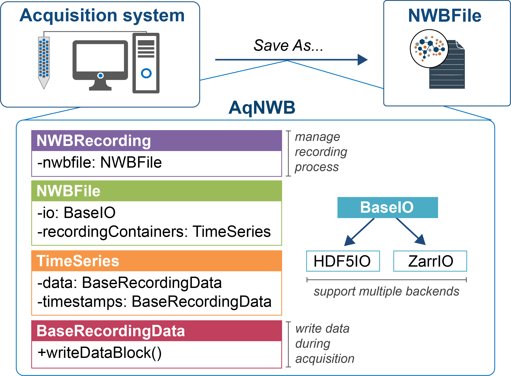

AqNWB is a C++ API for acquiring neurophysiological data directly into the NWB (Neurodata Without Borders) format. Our goal is to provide a lightweight API to integrate with existing acquisition systems. Key features of AqNWB include:
- Efficient and resilient data acquisition:
- Efficient data acquisition with HDF5 capabilities including chunking and compression
- Use SWMR (single writer multiple reader) mode for concurrent access and improved fault tolerance to prevent data corruption during acquisition
- Effective read/write access for NWB data:
- Modular and extensible architecture to facilitate integration of NWB read/write with acquisition systems
- Support for data acquisition for common electrophysiological data types
- Extensible design to support integration of new data types and extensions
- Extensible I/O backend design to support integration of new I/O backends
- Sustainable and robust software testing:
- Cross-API validation tests to ensure NWB files generated by AqNWB are valid and follow best practices using NWBInspector
- Cross-platform continuous integration including unit testing, static code checks, and memory profiling
- Open and easy-to-use:
- Detailed online documentation and guides for users and developers
- Open-source licensing

Overview of the project structure and capabilities.
Status 📈
AqNWB is under active development. The core functionality for writing and reading NWB files are fully functional. AqNWB does not yet support writing of all neurodata_types defined in NWB.


Installation 🛠️
Documentation 📚
The documentation is divided into the following main sections:
- For Users : This section is for users who want to use AqNWB in their software project, e.g., to integrate NWB with an acquisition system.
- For Developers : This section is for developers and community members who would like to contributed to the development of AqNWB.
- API Reference: The API docs are autogenerated from the AqNWB source code using Doxygen, providing detailed reference for all:
Legal ⚖️